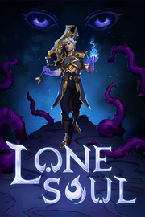

 |
|
| Tiempo de juego | No Jugado |
| Última actividad | Nunca |
| Añadido | 25/10/2025 2:26:35 |
| Modificado | 25/10/2025 2:27:20 |
| Estado de finalización | Not Played |
| Librería | Playnite |
| Fuente | 2TB GAS |
| Plataforma | PC (Windows) |
| Fecha de lanzamiento | 20/10/2025 |
| Puntuación de la Comunidad | 73 |
| Puntuación de la Crítica | |
| Puntuación de usuario | |
| Género | Acción |
| Desarrollador | Laughing Fox Games |
| Editor | Laughing Fox Games |
| Característica | Cloud Saves Compat. Total Con Mando Controles De Volumen Personalizados Guardar En Cualquier Momento Préstamo Familiar Un Jugador |
| Enlaces | Punto de encuentro Discusiones Guías Noticias Página de la tienda PCGamingWiki |
| Tag | 3D Acción Ambientales Combate Exploración de mazmorras Fantasía Fantasía oscura Gestión de inventario Hack and slash Isométricos JcE Magia Roguelike Roguelike de acción Roguelite Rol de acción Un jugador Valor continuo |
Lone Soul es un roguelite de acción hack’n’slash que combina combates fluidos basados en combos con una personalización estratégica del personaje. Juega como Varus, un conquistador poderoso y excéntrico, decidido a adentrarse en una torre mítica envuelta en caos.
Tus acciones decidirán si enciendes una chispa de esperanza para Revelia, un alma solitaria que se hunde en la oscuridad. Con golpes precisos, mejoras rúnicas y desafíos impredecibles, cada intento de rescate trae nuevas oportunidades y peligros.
El estilo y la precisión marcan la diferencia. Libera combos devastadores, forja vínculos con los poderosos Guardianes del Orden para transformar tus habilidades y mejorar tu equipo. Las profecías otorgan bonificaciones si te atreves a enfrentar desafíos más arriesgados.
Los enemigos derrotados sueltan runas místicas que puedes insertar en un árbol de habilidades para mejorar el equipo y desbloquear poderes. Crea builds que van desde los más frágiles y letales hasta los que aguantan todo lo que venga.
Como Varus, un antiguo patrón de las sombras, emprendes una misión peligrosa para rescatar a Revelia, una conquistadora atrapada en lo profundo de la torre. Recorre tres niveles cargados de misterio y conviértete en su última esperanza.
Cada piso termina con una batalla intensa contra un jefe con habilidades únicas. Pero cuidado: al borde de la derrota, los Guardianes invocan proyecciones letales, subiendo la apuesta y aumentando la intensidad del combate.